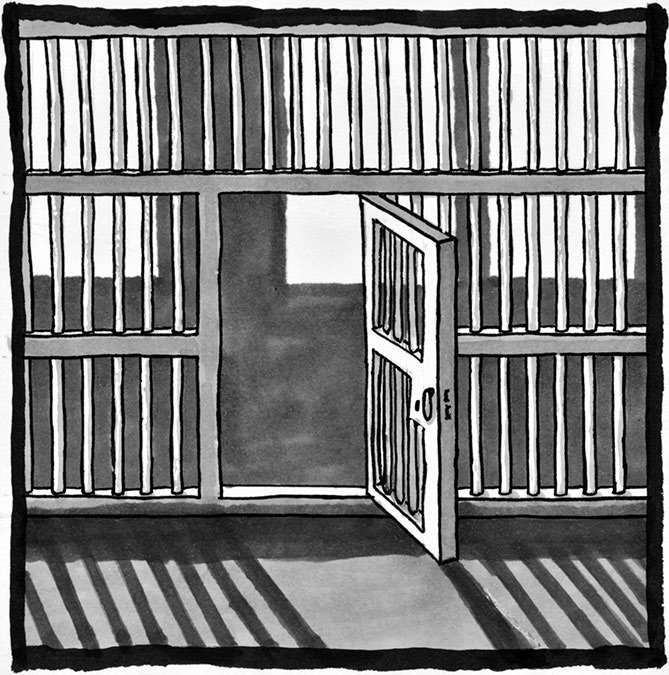
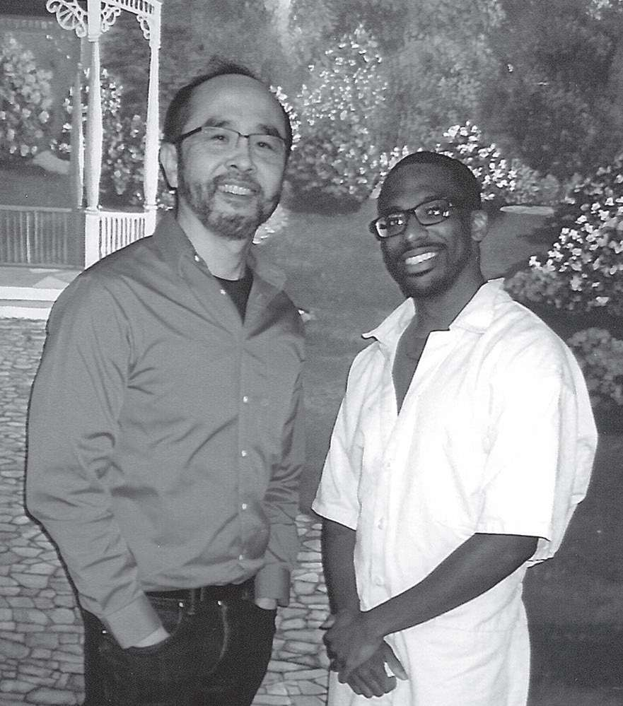

后记
弗朗西斯：克里斯你好，首先我要对你的无私表示感谢，你提供的这些个人事迹在本书中可以说是起到了画龙点睛的作用。此外我也要感谢上天能够赐予我们二人这样一段缘分，能够让我们在这么多年的时间里一直保持书信往来。我最想看到的事情，同时也是我最坚信不疑的事情，就是每一位读者都会像我一样，深深地被你的经历所打动、所鼓舞。现在，为了让意犹未尽的读者们能够再多走一段旅程，你能不能再多讲一些你自己的故事？
克里斯：当然可以。我也很感谢您能够通过此书把我的故事分享给大家。我从咱们的信件中学到了很多东西，如果这些东西刚好也能给大家带来一些启发，那可真是太好了。

弗朗西斯：读者们已经初步了解了你的学习经历。起初，你只是在阅读一些基础的数学科普著作；后来，你开始把目光投向难度更高的专业教材；如今，你已经和业内的数学家们一样，捧起了专业期刊和文献，尽管有些术语你还不太了解。我觉得，在同样的学习阶段，在同样晦涩难懂的专业资料面前，当年的我根本没有你这种毅力和决心。
克里斯：对我来说，数学就是一把用来开启创造力的钥匙，很像《我的世界》这类游戏。我喜欢抽象的事物，因为抽象当中既蕴藏着很多可能性，使得同一个抽象概念可以对应各种不同事物，又蕴含着强大的力量、很大的包容性，可以把不同的概念或事物串联成一个整体。要说这些抽象事物能给我带来什么具体好处，我可以给大家举一个例子：现在，你在逻辑思维的帮助下学习了一些知识，而且学得非常明白。然后你找到了一个可以无话不谈的朋友，跟他讨论你刚学到的东西（如果你有这么一位朋友的话）。如果他的观点完全不合逻辑，那么在逻辑思维的帮助下，你就可以“看到”他逻辑当中的漏洞，然后耐心地跟他解释，告诉他问题出在哪儿（不过你没必要非得说服对方，也没必要非得争出个孰对孰错）。这还仅仅是逻辑思维带来的好处而已。
弗朗西斯：你知道，我很喜欢下面这个问题，现在我准备拿这个问题来问问你：根据你的经验，你觉得数学的研究过程和学习过程中有哪些需要注意的东西？
克里斯：我认为，无论是在学习阶段还是在创造阶段，我们都要注意，解决问题的方式有很多，每个人擅长的方法也不一样，你只要找到适合自己的道路就好了。有时你的想法会让人觉得稀奇古怪，有时你的思路可以起到立竿见影的效果，有时你的方案甚至会有悖常理，这都是正常现象，不必担心。只要能解决问题，你的方法就是好方法。当然，我也不是说只要付出就一定能有所收获。要想成功，你还得充分发挥自己的创造力才行。数学是一门讲究创造力的学科。
弗朗西斯：没错，数学的探索会激发人的创造力。相信读者已经发现，我在书中列举了大量案例，就是想说明数学是人类繁荣发展的推动力。一方面，数学无处不在，因为它能完美地契合人类心中那些最基本的渴求；另一方面，数学也能给大家带来很多益处，比如适当适量的数学练习可以帮助大家建立很多优秀品格。现在我想问问你，书中这些观点与见解是否给你带来了某种鼓舞，或是某些挑战？对数学的不懈追求帮助你获得了怎样的优秀品格？鉴于在本书的初稿阶段你给出了很多宝贵的意见（非常感谢），所以我相信，你一定深刻思考过这些问题。
克里斯：其实在我们谈论过的那些内容中，有很多都给我带来了鼓舞和挑战（我觉得鼓舞和挑战很像，二者没有太大区别）。不过，虽然本书大部分内容都能给我带来鼓舞和挑战，但有段话令我印象尤为深刻，让我想到了很多之前不曾思考过的东西。那段话是这样说的：“创造力是一种谦逊的力量，它永远把别人放在第一位，它会想尽办法去解放他人的创造力。”在我的人生逐渐步入正轨之后，我终于意识到我之前实在是做了太多荒唐事。如今我幡然醒悟，为了不重蹈覆辙，我现在会时不时地进行自我反省，认真思考自己的一举一动会给身边的人、周围的环境带来怎样的影响。我教别人知识的时候会产生一种难以言表的自豪感，我感觉自己正在“解放他人的创造力”——这种感觉让我更加热衷于分享知识，传递思想。
另外，数学也帮我建立起了持之以恒的决心：遇到棘手的难题时，我会不断告诫自己，只有坚持不懈才能有所收获。在我看来，只有反复尝试，不断努力，才能看到解决问题的希望。比如现在有个难题摆在我面前，我暂时找不到任何思路，但只要我永不言弃，只要我一直把这个问题放在心上，那么在出去走一走换个思路之后，或是在第二天，或是在第三天……我总能找到解决方案，总会离最终的真相越来越近。这种办法屡试不爽，90%的情况下都能奏效。此外，我也很清楚集体的重要性：如果我们不愿意互相分享知识，互相传授经验，那么没有任何人可以取得伟大的成就。
弗朗西斯：你说得太对了。此外，本书中我其实一直在强调这样一个观点，那就是我并没有把数学当成解决人间疾苦的灵丹妙药。数学并不能解决人类的所有问题，也不能让每一个灵魂都能找到自己人生的价值和生命的意义。不过我们也不得不承认，数学在很多方向上都对我们的生命产生了重要的影响，帮助我们走出了更精彩的人生，你的亲身经历便是最好的证明。那么，除了数学，还有没有别的什么事情，既可以让你乐此不疲，又有助于你的个人发展？
克里斯：这么说的话……国际象棋也教会了我很多东西。另外，在体育运动的过程中我锻炼了自己的耐力，尤其是跑步这项运动，几乎每跑半英里我就想停下来歇一会儿。可是如果我抑制住这种欲望，不去想休息的事情，那么在不知不觉间，我就能一口气跑上四五英里，有时甚至能跑 10 英里。此外，经常向不同的人请教，聆听不同的想法，也让我学到了很多东西（一定要认真聆听，仔细揣摩他人的话语）。比如我明白了一定要多角度看待问题（就像你一直强调的那样），同时也养成了开放的心态。
弗朗西斯：我相信读者一定能够从你的信件中得到很多启发。既然这些信件全部写于本书创作之前，现在你重新读到它们时是怎样一种感受？
克里斯：重读的时候，我可以站在全新的视角去看待以前的问题，看看那些观点是否正确，是否存在瑕疵或纰漏。我喜欢时不时地回顾一下以前写的东西（无论是诗歌、信件，还是其他形式的文字）——包括其他人对此写下的评论、意见等内容——感受其中的物是人非，同时见证自己的成长。无论是通过咱们之前的信件，还是通过我与其他任何人的信件，我都能看到自己对知识的理解正在变得越来越深刻，掌握的东西也越来越丰富。
弗朗西斯：我也发现了你身上的这些变化，我为你感到开心。听说你现在正在帮助狱友们学习数学知识。为了改变大家对数学的刻板印象，让大家对数学形成一种正确的认知，你是如何跟他们沟通的呢？
克里斯：鉴于很多狱友都和我一样从事过毒品的贩卖与销售，我在教他们数学的时候会用交易当中的术语来阐释一些概念，效果往往不错。最近我在教大家什么是直线的斜率，什么叫恒定的变化率，以及线性函数的概念与运算。为了让大家能够听明白，我的表述方式常常是这样的：“x是自变量，y是因变量，x代表时间，y代表金钱……如果你 1 小时可以卖 7 件衬衫，那么 3 小时可以卖几件？……没错，是 21 件，那么 4 小时卖几件？5 小时呢？这就是所谓的‘恒定的变化率’。”这就是我的沟通技巧，每次我都尽量把数学知识变成“真实的生活场景”。
弗朗西斯：虽然信件的篇幅都不太长，但我相信读者还是能够从只言片语中发现，你最近这一年过得异常艰辛，在上一所监狱中遭受了很多不公正的待遇。还好现在情况已经有所好转，之前我真是替你捏了一把汗。我想知道，监狱生活中哪件事让你最为头疼？
克里斯：我是一个崇尚自由的人，所以对我来说，最让人头疼的就是我失去了自由。在大多数情况下，你根本无法自己安排时间（无法自由安排日常生活），这是一件很痛苦的事情。尽管我被判处了一段时间的监禁，但这并不意味着我就低人一等了，可事实上有些（几乎是全部）工作人员根本不把我当人看。这段经历对我造成了巨大的精神打击。尽管我已经有好长一段时间没有沉溺在颓废消沉之中，可我一直没有摆脱掉这种负面情绪给我带来的长久影响。那种日复一日的单调与枯燥，那种强制性的无所事事，让人感觉自己的生命只是一种“短暂的存在”（我忘了是在哪儿看到这句话的了）， 一切的一切好像都失去了意义。
这么说吧，只要你不是一个虚度年华的人，你就一定能理解那种感受——在强制力的胁迫之下，你的生活彻底失去了意义，彻底失去了目标。在那段不堪回首的时间，是数学给我带来了帮助，让我看到了光明，让我找到了奋斗目标，甚至引领我树立起了一个更为宏伟的愿望，那就是把数学知识不断地传递下去，让更多的人能够享受到教育带来的快乐，进而激发大家的学习热情。
弗朗西斯：在本书中，我花了不少笔墨讨论种族问题。这是一个很尖锐的话题，讨论起来极为困难，因为每个人经历过的种族问题都不相同，而且很多经历都会让人感到痛苦不堪。不过我还是希望大家在读完我的这些文字以后能够时常反思，看看自己在“如何看待他人与数学之间的关系”这个问题上，是不是产生了一些先入为主的偏见。作为一名非洲裔美国人，你在学习与生活中遇到过哪些障碍呢？
克里斯：年轻的时候，我在校园里几乎没有遇到过任何糟心的事（除了我自己惹下的那些祸事）。在还没有走进非传统学校的那段时间里，我就读的学校一直都很不错，教师们也来自五湖四海，什么种族都有，而且人都很好。自从成年以后，我就一直没离开过监狱，所以我人生的大部分时间都是在铁窗中度过的。至于入狱之前的那段青少年时期我过着怎样的生活，如果你和身边的亲人都没有亲身经历过，那你很难明白那是一种什么样的人生状态。唉，说实话，有时候连我自己都弄不清。不过，自从来到这些安全级别较低的关押机构以后，我就见识了什么叫作种族歧视。这些歧视有时来自非黑人囚犯，有时也来自年纪较大的黑人囚犯，以及监狱的工作人员。如果你年纪不大（不得不说，我看上去还挺年轻的），同时又刚好是一个黑人男性，那么所有人都会先入为主地认为你这个人什么都不懂。既然我遭到了冒犯，那么按理来说我应该生气，可事实上我很清楚，这种破事在监狱里实在太正常不过了，而且我也知道，受大环境的影响，大部分人都只会以貌取人，看待事物永远只停留在表面。所以我选择一笑了之，并没有过分纠结这些事。
弗朗西斯：经历了这么多年的书信来往，我们总算在几个月之前实现了第一次见面，那种喜悦与激动到现在都没有完全消失。其实见面之前我还是有点紧张的，但这丝毫不影响我对这次见面的期待。话又说回来，之前咱们都是通过文字交流，亲自会面的那一刻心里总是感觉怪怪的。不过下了两盘国际象棋之后，这种尴尬的感觉很快就烟消云散了。另外我不得不感慨一下，你的棋艺真是不错，居然接连两局都把我压制得毫无还手之力！我的感觉差不多就是这样，你呢？第一次见面的时候你是什么感受？
克里斯：您当时算不上紧张吧，我可一点儿都没看出来。另外您之前也说了，您很久都没下过棋了，所以这两局胜利实在说明不了什么。跟您交谈非常愉悦，我很享受这种感觉。我知道我说话有时会太过“热情”，朋友们总是这样跟我说：“不用担心，克里斯，我们知道你不是故意要让语气显得这么尖锐，不过你讲话时的情绪的确相当饱满，让人听上去就觉得你对自己的言辞充满了信心。”希望这种热情没有让您太过困扰。我记得打破了最初的尴尬之后，我们马上就热切地交流了起来，我从对话中也学到了很多东西（比如，所有平方数要么刚好被 4 整除，要么除以 4 之后余 1）。在我看来，您是一个言行一致、谦逊大方的人，总是能够给人带来激励与希望。我很欣赏这些品格，我自己也在朝着这个方向努力。

在经历了长达五年的书信交流之后，我和克里斯托弗·杰克逊终于跨过了几乎是整个美国大陆的距离，于 2018 年 11 月第一次见了面。
照片的背景是监狱墙上的一幅壁画，也是监狱中唯一允许拍照的地方
弗朗西斯：其实我的感受和你一样，我也觉得你是一个真诚体贴、谦逊大方的人。如果你可以遇到年轻时候的自己，你会给他哪些忠告和建议？
克里斯：年轻时候的我啊，要是真能遇到，在他乖乖听话之前，我说话必须得严厉一些才行。不过我相信他最终一定会听我的话。一直以来，我都更愿意信任那些年龄稍大于我的人，更愿意聆听他们的教诲，尤其是在他们说话颇有几分道理且赢得了我的尊重的情况下。对小克里斯来说，有些话必须再三强调，因为他是一个相当固执的孩子。我最想让他明白的道理，最想对他说的话就是：“做一个酷酷的小孩很有意思，有时也的确应该融入周边环境，但有件事远比这些鸡毛蒜皮的事重要，那就是你一定要看清事实与真相，一定要时刻清楚自己身边到底发生了什么，决不能糊里糊涂地过日子。真实的世界比你看到的世界广阔得多：几乎有无数种方式可以让你出人头地，可以让你实现自己的理想，千万不能为了一时的利益搭上自己的整个人生。尽管很多时候我们总是更看重金钱这类比较物质的东西，可实际上它们一点儿也不重要，生活和未来才是你的一切，绝对不能用金钱这类东西去衡量它们。”虽然小时候的我异常倔强（这也是如今我意志如此坚定的原因），但我现在已经成熟了很多，我绝对可以跟他讲明白这些道理。
弗朗西斯：你对未来抱有怎样的希望？怀有怎样的担忧？
克里斯：虽然目前我取得了一些成果，但我还是希望接下来的人生中我可以做出更多更有意义的事情。我希望我能够帮助到更多和我情况相似的人，这样他们就不会再遭受我曾经遭受过的痛苦，犯下我曾经犯过的错误，深爱着他们的家人和朋友也不会再像我的家人和朋友一样咽下大量的泪水，遭受大量的悲痛。我希望我可以在闲暇之余让更多的人爱上学习，点燃他们对知识的渴望。我希望自己没有夸夸其谈，希望自己可以言出必行，希望自己可以通过努力让更多的人正确地理解与运用自己手中的力量。要说有什么担心与忧虑的话，我担心自己不会成功。可这个答案是不是有点投机取巧？毕竟每个人都会有这种担忧。要不我说一下我之前所忧虑的事情吧。我之前很害怕，害怕长久的监狱生活会把我彻底压垮，把我变成一个愤世嫉俗的人，从而失去前进的动力，失去对未来的期望，导致我即便重获自由也无法完成当初的梦想。不过我现在已经不太担心这种事了。除此之外，真的没什么事值得我去担心忧虑。我觉得，如果我能熬过眼前这一切，那么之后无论出现什么样的刀山火海、惊涛骇浪，我都能挺过去。
弗朗西斯：谢谢你，克里斯，谢谢你能够敞开心扉，跟读者们分享你的故事。我相信，不管之后的路有多么难走，你都能够顽强地坚持下去，活出生命的精彩。
克里斯：谢谢您能够把我的故事放在书中。我觉得从某种程度上来说我算是一个很幸运的人：挣扎的时候有人可以拉我一把，奋斗的时候有人能够伴我前行，他们在尽己所能地为我营造更美好的明天。谢谢你们。
克里斯是在 19 岁那年入狱的。迄今为止，在共计 32 年的刑期当中，他已经服完了 13 年。由于联邦监狱制度中没有假释这一说法，即便他表现良好，得到了减刑，他最早也得挨到 2033 年才能重返自由世界。他的刑期主要来自两起犯罪，单独来看的话，每起犯罪都会给他带来 7 年的刑期。可是由于当时的法律过于严苛，虽然第一起犯罪的确判了 7 年，但第二起犯罪足足判了 25 年。尽管 2018 年美国国会通过了《第一步法案》，可以让他这种情况的罪犯少判很多年，可这部法案无法对克里斯的案件生效。如果它可以追溯克里斯的案件，那算起来克里斯现在应该已经重获自由了。
我发现当今社会有很多人都喜欢压榨那些边缘化人群，一边让他们干苦力一边不给他们任何报酬。不过大家请放心，我不会忘记克里斯对本书的巨大贡献，他理应拿到他应得的那份报酬。
监狱生活原本并不好过，不过在数学的帮助下，克里斯得到了更长远的发展，过上了更充实的人生，甚至有余力去帮助他人，为他人的生命增添更多色彩。无论是在监狱内还是在监狱外，世界上其实还有很多和克里斯一样的人。在我的个人网站上（francissu.com），我列出了一份表格，上面都是可以为有需要的人提供一臂之力的机构和资源。我希望在你的无私支持下，在社会的大力帮助下，每个人都可以蓬勃发展，每个人都愿意帮助身边的人，彼此支持，互相关爱，一起走向丰富多彩的人生。
或许，你的身边早就有了和克里斯、西蒙娜一样的人。如果可以的话，为什么不多给他们一些鼓励与支持呢？在这一过程中，你也会得到宝贵的回赠。